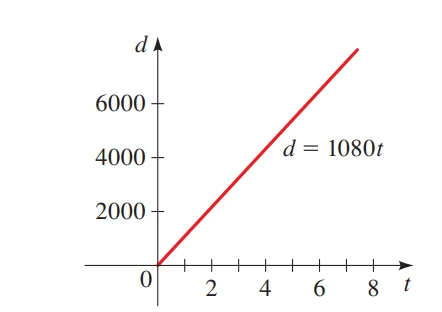
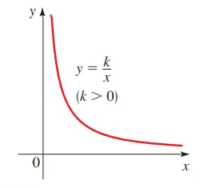

Los modelos matemáticos con el uso de variaciones son herramientas que describen cómo una cantidad cambia en función de otra. La idea fundamental es que las cantidades están relacionadas entre sí de forma predecible. Existen varios tipos de variaciones:
Tipos de Variación
Variación directa: Ocurre cuando una cantidad es proporcional a otra. La relación se expresa como \(y = kx\), donde \(k\) es una constante de proporcionalidad.
Variación inversa: Sucede cuando una cantidad varía inversamente con otra, es decir, a mayor \(x\), menor \(y\), representado por \(y = \frac{k}{x}\).
Variación conjunta: Una cantidad depende de varias otras. Por ejemplo, si \(z\) varía conjuntamente con \(x\) e inversamente con \(y\), la ecuación es \(z = \frac{kxy}{z}\).
Fórmulas y Teoremas
Variación Directa:
\[ y = kx \] Aquí, \(k\) es una constante que se puede determinar si conocemos \(y\) y \(x\). El teorema relacionado establece que cuando \(y\) varía directamente con \(x\), la razón entre \(y\) y \(x\) es constante.
Variación Inversa:
\[ y = \frac{k}{x} \] En este caso, \(k\) es constante, y a medida que \(x\) aumenta, \(y\) disminuye.
Variación Conjunta:
\[ z = \frac{kxy}{z} \] Si una cantidad varía conjuntamente con dos variables, la constante \(k\) se multiplica por ambas variables.
Ejemplos Aplicados y Gráficas
Variación Directa:
Durante una tormenta, se ve el rayo antes de escuchar el trueno porque la luz viaja mucho más rápido que el sonido. La distancia entre una persona y la tormenta varía directamente con el tiempo entre el relámpago y el trueno.
Supongamos que el trueno de una tormenta que está a 5400 pies de distancia tarda 5 segundos en llegar. Para encontrar la constante de proporcionalidad y escribir la ecuación para la variación, usamos la fórmula:
\[ d = kt \] Donde \(d\) es la distancia y \(t\) es el tiempo. Dado que \(d = 5400\) y \(t = 5\), podemos encontrar \(k\):
\[ 5400 = k(5) \quad \Rightarrow \quad k = \frac{5400}{5} = 1080 \] La ecuación resultante es:
\[ d = 1080t \] La constante \(k = 1080\) representa la rapidez del sonido en pies por segundo. Si el tiempo entre el relámpago y el trueno es ahora de 8 segundos, la distancia es:
\[ d = 1080 \times 8 = 8640 \text{ pies} = 1.6 \text{ millas} \]
Variación Inversa:
La Ley de Boyle dice que cuando una muestra de gas se comprime a una temperatura constante, la presión del gas es inversamente proporcional al volumen.
Si la presión de una muestra de gas que ocupa \(0.106 \, m^3\) es de 50 kPa, encontramos la constante de proporcionalidad y escribimos la ecuación para la variación inversa:
\[ P = \frac{k}{V} \] Donde \(P = 50\) y \(V = 0.106\), podemos encontrar \(k\):
\[ 50 = \frac{k}{0.106} \quad \Rightarrow \quad k = 50 \times 0.106 = 5.3 \] La ecuación resultante es:
\[ P = \frac{5.3}{V} \] Si el volumen se expande a \(0.3 \, m^3\), la nueva presión es:
\[ P = \frac{5.3}{0.3} \approx 17.7 \, \text{kPa} \]
